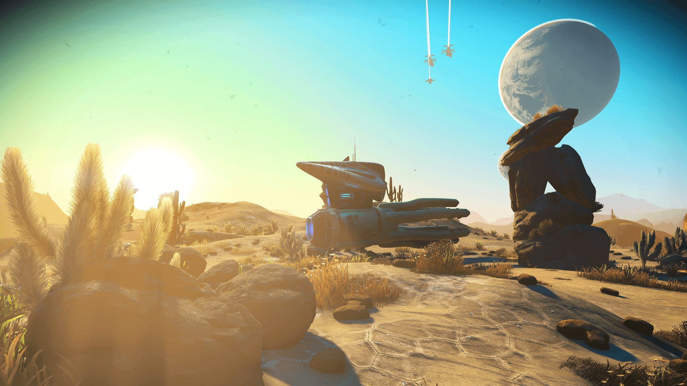
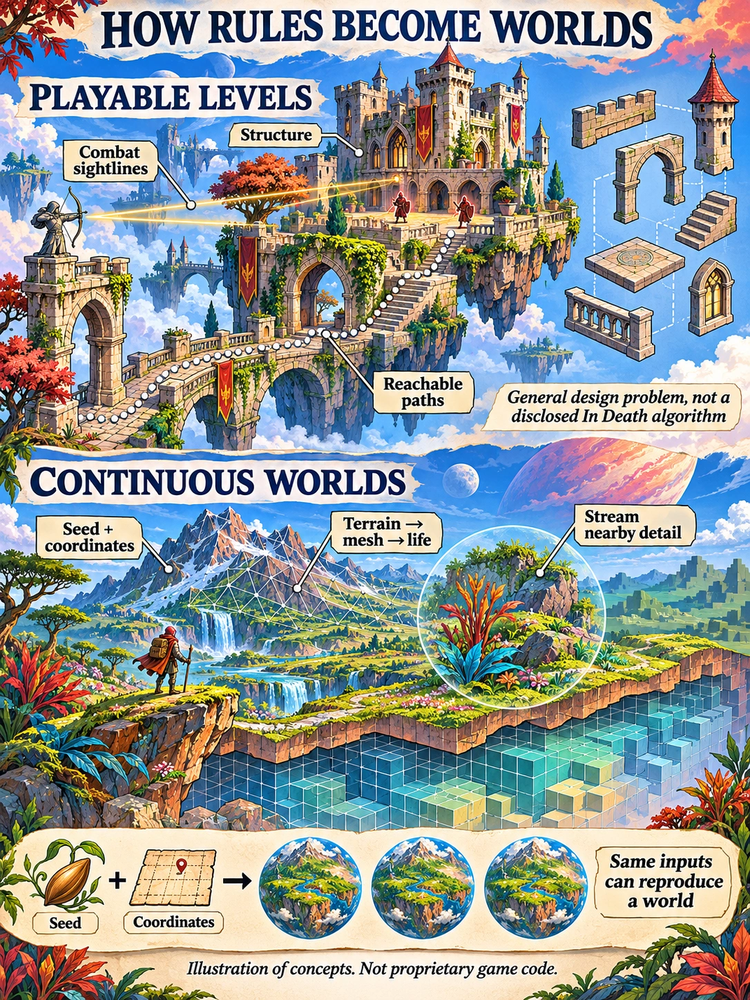

The Secret Behind Endless Game Worlds Is Less Secret Than It Looks
No Man’s Sky has explained much of its world-generation architecture in public. In Death: Unchained leaves more of its level-making machinery undocumented. The difference matters for anyone building procedural VR.

A new arrangement of ruined towers, a dangerous route across elevated platforms, or an alien landscape stretching beyond the horizon can make procedural generation feel like a closely guarded trick. The more interesting question is how much of that trick has already been explained well enough for another developer to learn from it.
For No Man’s Sky, the answer is substantial. Hello Games has given technical presentations about constructing terrain and continuously generating a planet around the player. For In Death: Unchained, there is direct developer testimony about rebuilding the generation system, but far less public detail about the rules that turn architecture into a playable level.
This is a technical feature about an enduring engineering problem, not an announcement that either studio has just released its source code. The useful distinction is between knowing general techniques, understanding a disclosed production architecture, and possessing the complete implementation needed to reproduce a particular game.
What Hello Games actually made public
At GDC 2017, Sean Murray presented Building Worlds Using Math(s). The session describes mathematical approaches to realistic and alien terrain, alongside the practical challenge of building and testing environments with a small team. That is an invitation to study the construction process rather than simply admire the size of the finished universe.
Innes McKendrick’s companion presentation, Continuous World Generation in No Man’s Sky, addresses the production pipeline more directly. Its official description follows voxel generation through polygonization, texturing, population and simulation, with the system working in real time as players explore planets. These are distinct jobs: describing terrain in sampled space, creating its visible surface, giving that surface an appearance, placing content, and maintaining behavior around the player.
The underlying lesson is economical. A procedural world does not have to exist as one enormous, fully detailed model waiting on a disk. Rules and parameters can produce the relevant portion when it is needed. A deterministic generator can return the same result from the same inputs, provided its rules and version remain fixed. Coordinates can identify where to generate; a seed can select a repeatable variation. Persistent player changes are an additional state-management problem, not something a seed solves automatically.
That explanation is a general model of procedural generation, not a claim that one sentence reproduces Hello Games’ engine. Scheduling work, managing memory, avoiding visible transitions and deciding which detail deserves computation are part of making the idea usable in an actual game.
A 2017 talk is not a specification of today’s game
The public record also shows why an old technical presentation should not be treated as frozen source code. Hello Games’ Worlds Part II notes describe changes to terrain generation that produce different planetary shapes, mountain ranges, valleys and plains. Its Worlds Part I notes describe work on procedural meshes, level of detail and texture streaming.
Those changes preserve the value of the earlier engineering lessons while limiting what they establish about a later build. Public presentations do not supply every content asset, parameter, optimization, compatibility decision or subsequent algorithm revision. The sources reviewed for this article do not provide the complete production code for either game.
In Death: Unchained exposes the challenge more than the recipe
In a July 2020 developer interview, Superbright CEO Wojtek Podgorski explained that the team re-engineered Sólfar’s procedural generation and implemented its own system for The Abyss. He described extensive asset optimization, Unreal Engine changes and work on teleportation while targeting the original Quest’s 72-frame-per-second requirement. This is an attributed developer account of that release, not a measurement of current hardware or later versions.
The interview also describes an automated development pipeline that rebuilt the game from components multiple times a day. That detail concerns the studio’s production workflow. It should not be converted into a claim about exactly how a player’s level is assembled at runtime.
The unanswered part is precisely what makes this game interesting as an engineering case study. The account does not establish whether its runtime generator uses a particular graph grammar, spatial subdivision algorithm, constraint solver, or combination of techniques. Attributing one of those methods to Superbright would go beyond the disclosed evidence.
We can nevertheless identify the design problem without pretending to know the proprietary answer. A convincing cathedral is not enough if the player cannot reach the next platform. Routes, elevation, combat sightlines and movement rules must work together. In VR, the environment also has to remain understandable from the player’s embodied viewpoint while fitting the device’s rendering budget. These are requirements to investigate and test, not a reverse-engineered specification of Unchained.
Procedural does not mean never repeated
There is another important correction to the popular description of these games: procedural generation does not guarantee a wholly unprecedented level every time somebody plays.
Sólfar’s November 15, 2018 development entry describes challenge runs in the original In Death using the same random seed and achievement profile. That is a concrete example of repeatable generation. It applies to the original game; it should not be silently treated as documentation of every mode in Unchained.
Repeatability is useful rather than embarrassing. It can support fair challenges, bug reproduction and comparisons between runs. A generator may also rearrange a finite vocabulary of authored pieces into many layouts. The amount of possible variation and the feeling of meaningful novelty are different things. Repeating an archway is not necessarily a failure; repeating the same tactical experience behind a different arrangement of arches might be.
Two problems that can inform one another

The useful comparison is one of emphasis. In Death: Unchained makes navigable, encounter-ready architectural space the compelling problem. No Man’s Sky provides unusually accessible material on continuous world generation at planetary scale. Both involve more than that summary, but the distinction helps developers ask better questions.
An independent prototype could combine a repeatable, coordinate-addressable landscape with an architectural generator that checks reachability and encounter constraints. The illustration accompanying this story shows that proposed synthesis. Its castle modules and routes are conceptual examples, not recovered In Death code; its terrain layers simplify a general generation pipeline rather than diagramming every stage of No Man’s Sky.
For a standalone-VR project, I would start with a small environment whose rules can be tested. Can every required destination be reached? Does the player understand where to go? Are enemies placed in encounters that remain interesting? Can the same seed reproduce a broken case? Does the environment stay within its frame and memory budgets as the player moves? Only then would I expand the geographical scale.
The public knowledge is sufficient to begin that work without either studio’s proprietary source. It is not sufficient to claim an exact clone of their internal systems. The most valuable investigation is therefore not a hunt for one hidden random-number formula. It is a study of how generation rules, authored content, movement constraints and real-time budgets cooperate to produce a world that feels deliberately designed.